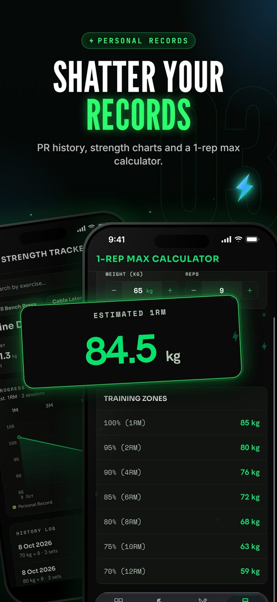

All projects
 Case Study · Mobile App
Case Study · Mobile App
VOLT FIT — training, nutrition and coaching in one app
Most fitness apps cover a single piece: workouts, or food, or a WhatsApp chat with your coach — and almost none are built for Arabic-speaking users. I designed and built VOLT FIT end-to-end to bring all of it into one place. It is live on Google Play.

